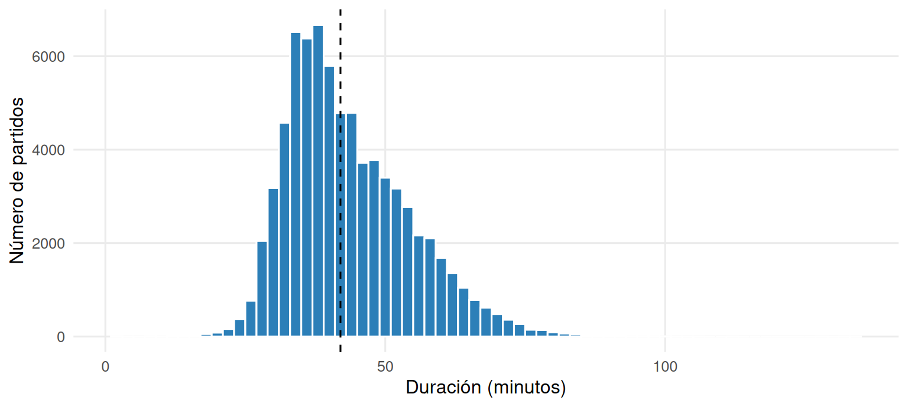
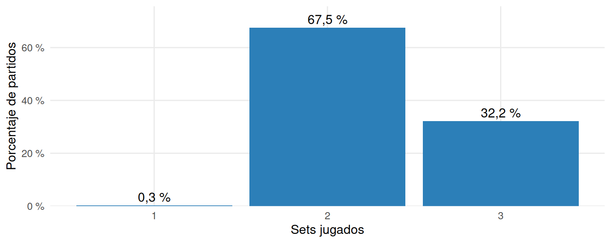
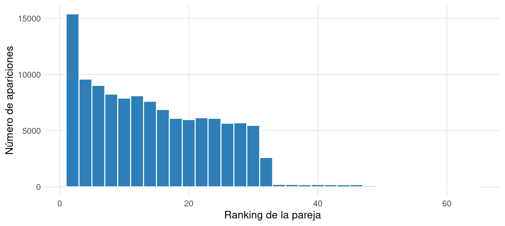
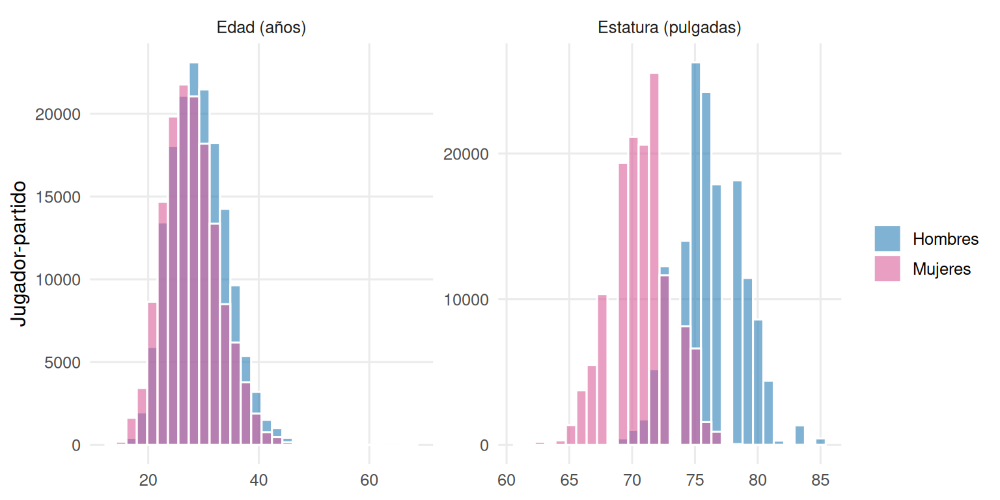
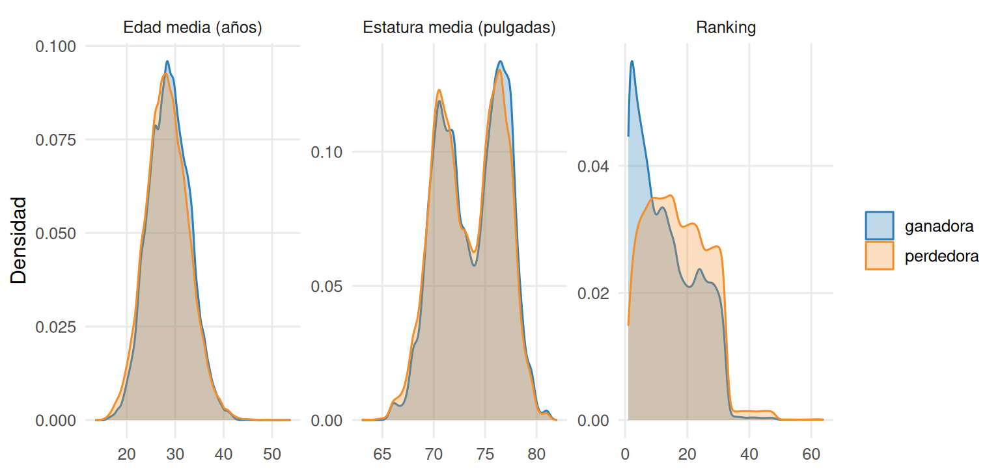
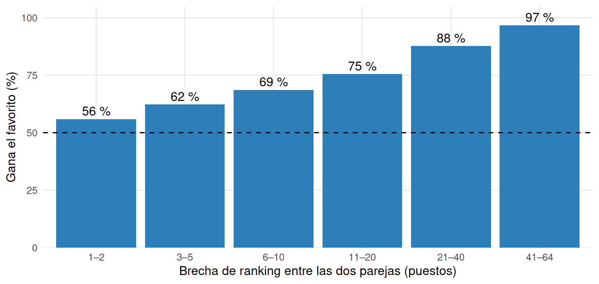
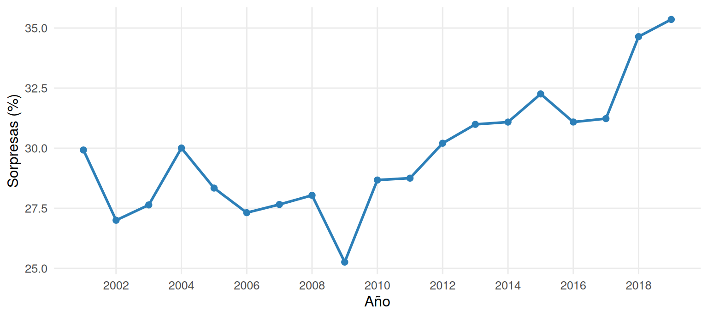
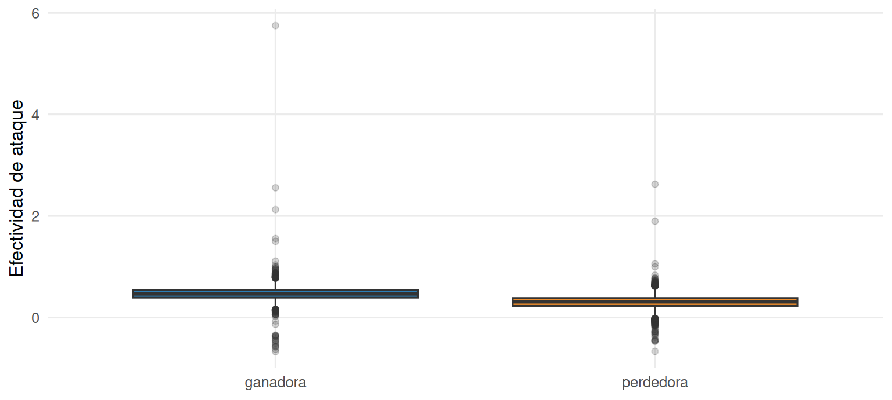
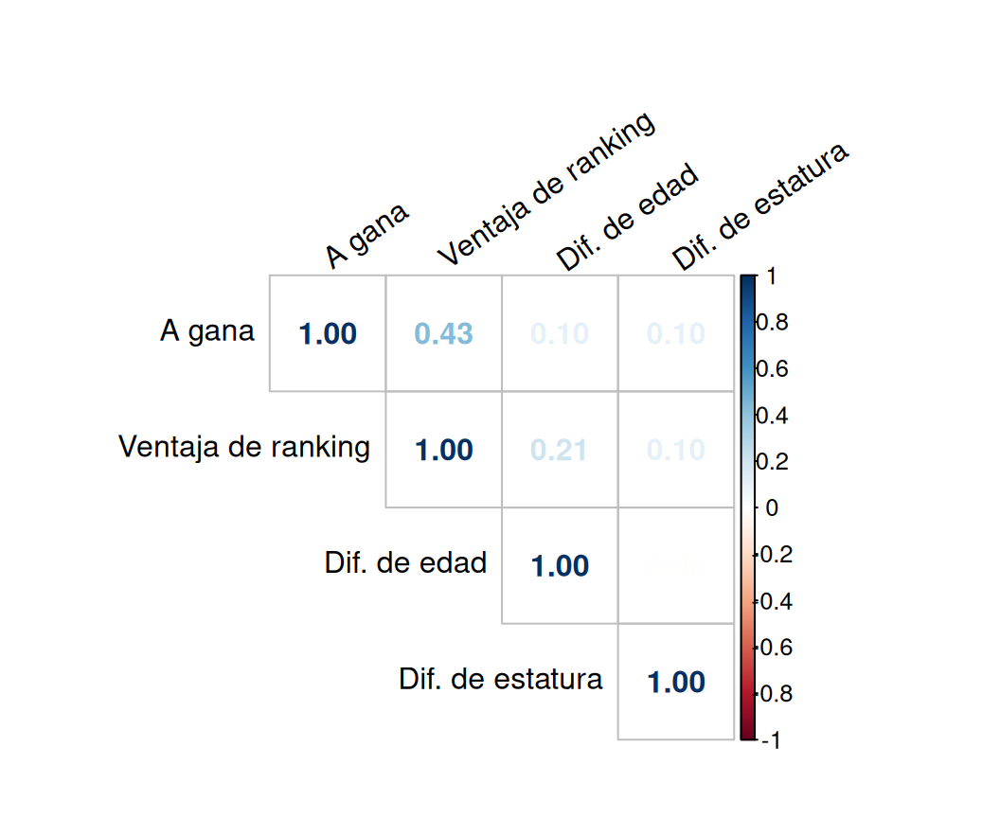

Capítulo 6 Análisis exploratorio
Este capítulo responde la pregunta del libro con los archivos limpios del capítulo 5: partidos (un partido por fila) y parejas (una fila por pareja y partido). Avanza en tres niveles, de lo simple a lo conjunto: cada variable por separado (6.1), cada variable frente al resultado (6.2) y varias variables a la vez (6.3). Cada sección termina con un recuadro «Para el entrenador».
col_gen <- c(Hombres = "#2c7fb8", Mujeres = "#d95f9a")
asimetria <- function(x) {
x <- x[!is.na(x)]
m <- mean(x)
mean((x - m)^3) / mean((x - m)^2)^1.5
}
resumir <- function(x, nombre) {
x <- x[!is.na(x)]
tibble(Variable = nombre, n = length(x), Media = mean(x), Mediana = median(x),
DE = sd(x), P25 = quantile(x, .25, names = FALSE),
P75 = quantile(x, .75, names = FALSE), Mín = min(x), Máx = max(x),
Asimetría = asimetria(x))
}
fp <- function(p) ifelse(p < 0.001, "< 0,001", fmt(p, 3))6.1 Análisis univariado
6.1.1 El partido
bind_rows(
resumir(partidos$duration_min, "Duración del partido (min)"),
resumir(partidos$n_sets, "Sets por partido"),
resumir(parejas$rank_num, "Ranking de la pareja (1 = mejor)"),
resumir(parejas$edad, "Edad media de la pareja (años)"),
resumir(parejas$estatura, "Estatura media de la pareja (pulgadas)")
) %>% tabla(caption = "Estadísticos descriptivos de las variables numéricas principales.")| Variable | n | Media | Mediana | DE | P25 | P75 | Mín | Máx | Asimetría |
|---|---|---|---|---|---|---|---|---|---|
| Duración del partido (min) | 74.506 | 43,92 | 42,00 | 10,95 | 36,00 | 51,00 | 2,00 | 134,00 | 0,81 |
| Sets por partido | 75.840 | 2,32 | 2,00 | 0,47 | 2,00 | 3,00 | 1,00 | 3,00 | 0,70 |
| Ranking de la pareja (1 = mejor) | 118.306 | 14,95 | 14,00 | 9,75 | 7,00 | 23,00 | 1,00 | 64,00 | 0,48 |
| Edad media de la pareja (años) | 151.014 | 28,56 | 28,45 | 4,30 | 25,59 | 31,46 | 13,49 | 53,82 | 0,16 |
| Estatura media de la pareja (pulgadas) | 136.405 | 73,62 | 73,50 | 3,17 | 71,00 | 76,50 | 63,00 | 82,00 | -0,11 |
med_dur <- median(partidos$duration_min, na.rm = TRUE)
partidos %>%
filter(!is.na(duration_min)) %>%
ggplot(aes(duration_min)) +
geom_histogram(binwidth = 2, fill = col_azul, color = "white") +
geom_vline(xintercept = med_dur, linetype = "dashed") +
labs(x = "Duración (minutos)", y = "Número de partidos")
Figura 6.1: Duración de los partidos (minutos). La línea marca la mediana.
partidos %>%
filter(!is.na(n_sets)) %>%
count(n_sets) %>%
mutate(p = n / sum(n)) %>%
ggplot(aes(factor(n_sets), p)) +
geom_col(fill = col_azul) +
geom_text(aes(label = pct(p)), vjust = -0.4) +
scale_y_continuous(labels = function(x) paste0(100 * x, " %"), expand = expansion(mult = c(0, .12))) +
labs(x = "Sets jugados", y = "Porcentaje de partidos")
Figura 6.2: Distribución del número de sets jugados.
p_tres <- mean(partidos$n_sets == 3, na.rm = TRUE)
corta_n <- sum(partidos$duracion_corta, na.rm = TRUE)El partido típico dura 42 minutos (mediana) y se resuelve en dos sets; el 32,2 % de los partidos llega a un tercer set. La distribución de la duración tiene cola larga hacia la derecha (asimetría positiva): hay partidos muy largos, pero casi nunca partidos muy cortos.
6.1.2 Los jugadores y las parejas
parejas %>%
filter(!is.na(rank_num)) %>%
ggplot(aes(rank_num)) +
geom_histogram(binwidth = 2, fill = col_azul, color = "white") +
labs(x = "Ranking de la pareja", y = "Número de apariciones")
Figura 6.3: Ranking de las parejas en cada partido (1 = mejor).
El ranking numérico va de 1 a 64 y se concentra en los puestos bajos, porque las parejas mejor rankeadas juegan más partidos (llegan más lejos en cada torneo). Está disponible para 77,1 % de las apariciones de pareja.
jugadores %>%
group_by(Género = gender) %>%
summarise(`Jugador-partido` = n(),
`Edad mediana (años)` = median(edad, na.rm = TRUE),
`Estatura mediana (pulgadas)` = median(estatura, na.rm = TRUE),
`Estatura mediana (cm)` = median(estatura, na.rm = TRUE) * 2.54) %>%
tabla(caption = "Edad y estatura de los jugadores por género.", digits = 1)| Género | Jugador-partido | Edad mediana (años) | Estatura mediana (pulgadas) | Estatura mediana (cm) |
|---|---|---|---|---|
| Hombres | 161.064 | 28,9 | 76 | 193,0 |
| Mujeres | 145.932 | 27,5 | 71 | 180,3 |
jugadores %>%
select(gender, `Edad (años)` = edad, `Estatura (pulgadas)` = estatura) %>%
pivot_longer(-gender, names_to = "variable", values_to = "valor") %>%
filter(!is.na(valor)) %>%
ggplot(aes(valor, fill = gender)) +
geom_histogram(bins = 30, position = "identity", alpha = .6, color = "white") +
scale_fill_manual(values = col_gen) +
facet_wrap(~variable, scales = "free") +
labs(x = NULL, y = "Jugador-partido", fill = NULL)
Figura 6.4: Edad y estatura de los jugadores por género.
gen <- jugadores %>%
group_by(gender) %>%
summarise(edad = median(edad, na.rm = TRUE), cm = median(estatura, na.rm = TRUE) * 2.54)
cm_h <- gen$cm[gen$gender == "Hombres"]; cm_m <- gen$cm[gen$gender == "Mujeres"]
ed_h <- gen$edad[gen$gender == "Hombres"]; ed_m <- gen$edad[gen$gender == "Mujeres"]Los hombres son más altos (mediana de 193 cm frente a 180 cm) y algo mayores (28,9 frente a 27,5 años). Como la estatura se distribuye distinto en cada género, cualquier comparación de estatura debe hacerse dentro del mismo género.
Para el entrenador
- Un partido normal son dos sets y unos 42 minutos; planear la preparación física para un tercer set tiene sentido (ocurre en cerca de 1 de cada 3 partidos).
- El ranking se mueve en una escala de 1 a 64: una diferencia de 5 puestos es una brecha moderada, una de 30 es enorme.
- La estatura y la edad de referencia no son las mismas en hombres y mujeres: compare a una pareja con su propio género.
6.2 Análisis bivariado
6.2.1 Parejas ganadoras frente a perdedoras
Se compara cada variable entre las parejas que ganaron y las que perdieron, con la prueba de Mann-Whitney, el tamaño de efecto rango-biserial y el solapamiento (capítulo 3). Para el ranking un número menor es mejor; por eso en esa fila se invierte el signo y un efecto positivo siempre significa «la pareja ganadora tiene el valor más favorable».
ovl <- function(x, y, bins = 30) {
br <- seq(min(c(x, y)), max(c(x, y)), length.out = bins + 1)
a <- hist(x, breaks = br, right = FALSE, include.lowest = TRUE, plot = FALSE)$counts / length(x)
b <- hist(y, breaks = br, right = FALSE, include.lowest = TRUE, plot = FALSE)$counts / length(y)
sum(pmin(a, b))
}
magnitud <- function(r) {
as.character(cut(abs(r), c(-Inf, .1, .3, .5, Inf), right = FALSE,
labels = c("trivial", "pequeño", "mediano", "grande")))
}
comparar <- function(v, nombre, signo = 1) {
w <- parejas[[v]][parejas$gano == 1]; w <- w[!is.na(w)]
l <- parejas[[v]][parejas$gano == 0]; l <- l[!is.na(l)]
test <- wilcox.test(w, l, exact = FALSE)
r <- signo * (2 * unname(test$statistic) / (length(w) * length(l)) - 1)
tibble(Variable = nombre, `n ganadoras` = length(w), `n perdedoras` = length(l),
`Mediana ganadoras` = median(w), `Mediana perdedoras` = median(l),
`r rango-biserial` = r, `Prob. de superioridad` = (r + 1) / 2,
Solapamiento = ovl(w, l), p = fp(test$p.value), Magnitud = magnitud(r))
}
comp <- bind_rows(
comparar("rank_num", "Ranking (mejor = menor)", signo = -1),
comparar("edad", "Edad media de la pareja"),
comparar("estatura", "Estatura media de la pareja")
)comp %>% tabla(caption = "Parejas ganadoras frente a perdedoras: prueba de Mann-Whitney, tamaño de efecto y solapamiento.", digits = 3)| Variable | n ganadoras | n perdedoras | Mediana ganadoras | Mediana perdedoras | r rango-biserial | Prob. de superioridad | Solapamiento | p | Magnitud |
|---|---|---|---|---|---|---|---|---|---|
| Ranking (mejor = menor) | 64.869 | 53.437 | 12,00 | 16,000 | NA | NA | 0,840 | < 0,001 | NA |
| Edad media de la pareja | 76.026 | 74.988 | 28,68 | 28,218 | NA | NA | 0,951 | < 0,001 | NA |
| Estatura media de la pareja | 70.368 | 66.037 | 74,00 | 73,500 | NA | NA | 0,952 | < 0,001 | NA |
parejas %>%
select(resultado, `Ranking` = rank_num, `Edad media (años)` = edad,
`Estatura media (pulgadas)` = estatura) %>%
pivot_longer(-resultado, names_to = "variable", values_to = "valor") %>%
filter(!is.na(valor)) %>%
ggplot(aes(valor, fill = resultado, color = resultado)) +
geom_density(alpha = .3) +
scale_fill_manual(values = col_res) + scale_color_manual(values = col_res) +
facet_wrap(~variable, scales = "free") +
labs(x = NULL, y = "Densidad", fill = NULL, color = NULL)
Figura 6.5: Distribución de ranking, edad y estatura en parejas ganadoras y perdedoras.
r_rank <- comp$`r rango-biserial`[1]; ps_rank <- comp$`Prob. de superioridad`[1]; ov_rank <- comp$Solapamiento[1]
r_edad <- comp$`r rango-biserial`[2]; r_est <- comp$`r rango-biserial`[3]
ov_edad <- comp$Solapamiento[2]; ov_est <- comp$Solapamiento[3]Con decenas de miles de partidos las tres diferencias son «estadísticamente significativas», pero su tamaño es muy distinto:
- Ranking: efecto NA (r = NA). Una pareja ganadora elegida al azar tiene mejor ranking que una perdedora en el NA % de los casos. Las distribuciones se solapan un 84 %.
- Edad: efecto NA (r = NA) y solapamiento de 95 %. Las ganadoras son apenas unos meses mayores, y buena parte de eso es un reflejo del ranking: las parejas mejor rankeadas tienden a ser más veteranas.
- Estatura: efecto NA (r = NA) y solapamiento de 95 %. Ser más alta en promedio da, como mucho, una ventaja mínima.
Para el entrenador
- De los tres factores, solo el ranking separa de forma útil a ganadoras y perdedoras. Edad y estatura medias casi no ayudan a distinguirlas: las dos distribuciones son prácticamente la misma.
- Que una diferencia sea «significativa» no quiere decir que sirva para decidir: con tantos partidos, hasta diferencias de pocos meses de edad lo son.
6.2.2 Cuándo el ranking anticipa el resultado
Se llama sorpresa al partido que gana la pareja peor rankeada. Solo se consideran los partidos donde las dos parejas tienen ranking numérico y distinto.
fav <- partidos %>% filter(!is.na(rank_diff), rank_diff != 0) %>%
mutate(sorpresa = rank_diff < 0)
n_fav <- nrow(fav)
tasa_fav <- mean(!fav$sorpresa)De 53.375 partidos con ranking en ambas parejas, el favorito (la pareja mejor rankeada) ganó el 70,1 % y hubo sorpresa en el 29,9 %: casi uno de cada tres partidos no respeta el orden del ranking. Pero ese promedio esconde mucho, porque depende de la brecha entre las parejas:
brecha <- fav %>%
mutate(`Brecha de ranking` = cut(abs(rank_diff), breaks = c(0, 2, 5, 10, 20, 40, 64),
labels = c("1–2", "3–5", "6–10", "11–20", "21–40", "41–64"))) %>%
group_by(`Brecha de ranking`) %>%
summarise(Partidos = n(), `Gana el favorito (%)` = 100 * mean(!sorpresa))
tabla(brecha, caption = "Probabilidad de que gane el favorito según la brecha de ranking.", digits = 1)| Brecha de ranking | Partidos | Gana el favorito (%) |
|---|---|---|
| 1–2 | 7.880 | 55,9 |
| 3–5 | 9.836 | 62,2 |
| 6–10 | 11.165 | 68,6 |
| 11–20 | 18.456 | 75,4 |
| 21–40 | 5.918 | 87,6 |
| 41–64 | 120 | 96,7 |
ggplot(brecha, aes(`Brecha de ranking`, `Gana el favorito (%)`)) +
geom_col(fill = col_azul) +
geom_hline(yintercept = 50, linetype = "dashed") +
geom_text(aes(label = paste0(fmt(`Gana el favorito (%)`, 0), " %")), vjust = -0.4) +
scale_y_continuous(limits = c(0, 105), expand = c(0, 0)) +
labs(x = "Brecha de ranking entre las dos parejas (puestos)", y = "Gana el favorito (%)")
Figura 6.6: Probabilidad de victoria del favorito según la brecha de ranking. La línea punteada es el azar (50 %).
Cuando las parejas están a 1 o 2 puestos, el ranking casi no informa (el favorito gana el 56 %, poco más que una moneda al aire). A medida que la brecha crece, la ventaja sube de forma sostenida hasta el 97 % con brechas de 41 puestos o más.
¿Cambia la tasa de sorpresas según el circuito, el género o la etapa?
tasas <- bind_rows(
fav %>% group_by(Factor = "Circuito", Grupo = as.character(circuit)) %>%
summarise(Partidos = n(), `Sorpresas (%)` = 100 * mean(sorpresa)),
fav %>% group_by(Factor = "Género", Grupo = as.character(gender)) %>%
summarise(Partidos = n(), `Sorpresas (%)` = 100 * mean(sorpresa)),
fav %>% group_by(Factor = "Etapa", Grupo = as.character(etapa)) %>%
summarise(Partidos = n(), `Sorpresas (%)` = 100 * mean(sorpresa))
) %>% ungroup()
chi_v <- function(f, nombre) {
tb <- table(fav[[f]], fav$sorpresa)
tb <- tb[rowSums(tb) > 0, , drop = FALSE]
ct <- suppressWarnings(chisq.test(tb))
tibble(Factor = nombre, `χ²` = unname(ct$statistic), gl = unname(ct$parameter),
p = fp(ct$p.value),
`V de Cramér` = sqrt(unname(ct$statistic) / (sum(tb) * (min(dim(tb)) - 1))))
}
asoc <- bind_rows(chi_v("circuit", "Circuito"), chi_v("gender", "Género"), chi_v("etapa", "Etapa"))
asoc$Magnitud <- magnitud(asoc$`V de Cramér`)
tabla(tasas, caption = "Tasa de sorpresas por circuito, género y etapa del torneo.", digits = 1)| Factor | Grupo | Partidos | Sorpresas (%) |
|---|---|---|---|
| Circuito | AVP | 14.969 | 25,4 |
| Circuito | FIVB | 38.406 | 31,7 |
| Género | Hombres | 26.726 | 31,1 |
| Género | Mujeres | 26.649 | 28,7 |
| Etapa | Clasificatoria | 337 | 54,9 |
| Etapa | Cuadro eliminatorio | 35.982 | 29,9 |
| Etapa | Fase de grupos | 17.056 | 29,5 |
| Factor | χ² | gl | p | V de Cramér | Magnitud |
|---|---|---|---|---|---|
| Circuito | 203,224 | 1 | < 0,001 | 0,062 | trivial |
| Género | 34,458 | 1 | < 0,001 | 0,025 | trivial |
| Etapa | 101,987 | 2 | < 0,001 | 0,044 | trivial |
s_fivb <- tasas$`Sorpresas (%)`[tasas$Grupo == "FIVB"]
s_avp <- tasas$`Sorpresas (%)`[tasas$Grupo == "AVP"]
n_clas <- tasas$Partidos[tasas$Grupo == "Clasificatoria"]
v_circ <- asoc[["V de Cramér"]][1]La tasa de sorpresas es mayor en la FIVB (31,7 %) que en la AVP (25,4 %), pero el efecto es trivial (V = 0,06); entre géneros la diferencia es todavía menor. En la fase clasificatoria el porcentaje parece muy alto, pero hay solo 337 partidos con ranking en ambas parejas (las clasificatorias casi no tienen ranking numérico), así que esa cifra no es confiable.
Lo que sí cambia es el tiempo:
tasa_anio <- fav %>%
group_by(year) %>%
summarise(partidos = n(), tasa = mean(sorpresa)) %>%
filter(partidos >= 200)
ggplot(tasa_anio, aes(year, 100 * tasa)) +
geom_line(color = col_azul, linewidth = 1) +
geom_point(color = col_azul, size = 2) +
scale_x_continuous(breaks = seq(2000, 2019, 2)) +
labs(x = "Año", y = "Sorpresas (%)")
Figura 6.7: Tasa de sorpresas por año (años con al menos 200 partidos con ranking en ambas parejas).
t03 <- 100 * tasa_anio$tasa[tasa_anio$year == 2003]
t19 <- 100 * tasa_anio$tasa[tasa_anio$year == 2019]La tasa de sorpresas pasó de 27,6 % en 2003 a 35,4 % en 2019: en los años recientes el ranking anticipa menos el resultado que a comienzos de los 2000. Es un patrón descriptivo; los datos no permiten explicar por qué.
Para el entrenador
- Con brecha pequeña (menos de 6 puestos), no confíe en el ranking: el favorito gana apenas entre 5 y 6 de cada 10 veces. Ahí pesan otros factores (estilo de juego, rival, estado de forma).
- Con brecha grande (más de 20 puestos), el ranking sí manda: el favorito gana cerca de 9 de cada 10 partidos con brechas de 21 a 40 puestos.
- Prepare más a fondo el partido contra una pareja ligeramente mejor: una sorpresa en ese caso es normal, no una rareza.
- El ranking de hoy anticipa menos que el de hace quince años: no dé por hecho que el favorito ganará.
6.2.3 Estadísticas de juego (solo para una parte de los partidos)
Las estadísticas de juego solo existen para una minoría de partidos y casi todas son de la AVP (capítulo 5). Se comparan las parejas ganadoras y perdedoras en el mismo partido con los totales de la pareja (suma de los dos jugadores), en los partidos que tienen todas las estadísticas completas.
vars_stat <- c(attacks = "Ataques", kills = "Kills (ataques ganadores)",
errors = "Errores de ataque", aces = "Aces",
serve_errors = "Errores de saque", blocks = "Bloqueos", digs = "Defensas (digs)")
cols_necesarias <- unlist(lapply(names(vars_stat), function(k) {
paste0(rep(c("w", "l"), each = 2), "_p", 1:2, "_tot_", k)
}))
gs <- partidos %>% filter(if_all(all_of(cols_necesarias), ~ !is.na(.)))
fila_stat <- function(w, l, nombre) {
U <- unname(wilcox.test(w, l, exact = FALSE)$statistic)
tibble(Estadística = nombre, `Media ganadora` = mean(w), `Media perdedora` = mean(l),
`r rango-biserial` = 2 * U / (length(w) * length(l)) - 1,
`Gana más la ganadora (%)` = 100 * mean(w > l),
`Gana más la perdedora (%)` = 100 * mean(l > w))
}
tab_stats <- bind_rows(lapply(names(vars_stat), function(k) {
w <- gs[[paste0("w_p1_tot_", k)]] + gs[[paste0("w_p2_tot_", k)]]
l <- gs[[paste0("l_p1_tot_", k)]] + gs[[paste0("l_p2_tot_", k)]]
fila_stat(w, l, vars_stat[[k]])
}))
# Efectividad de ataque de la pareja: (kills - errores) / ataques
hit <- function(p) {
(gs[[paste0(p, "_p1_tot_kills")]] + gs[[paste0(p, "_p2_tot_kills")]] -
gs[[paste0(p, "_p1_tot_errors")]] - gs[[paste0(p, "_p2_tot_errors")]]) /
(gs[[paste0(p, "_p1_tot_attacks")]] + gs[[paste0(p, "_p2_tot_attacks")]])
}
hit_w <- hit("w"); hit_l <- hit("l")
tab_stats <- bind_rows(tab_stats,
fila_stat(hit_w[is.finite(hit_w) & is.finite(hit_l)],
hit_l[is.finite(hit_w) & is.finite(hit_l)],
"Efectividad de ataque ((kills − errores) / ataques)"))tabla(tab_stats, caption = "Estadísticas de juego por pareja: ganadoras frente a perdedoras (partidos con estadísticas completas).", digits = 2)| Estadística | Media ganadora | Media perdedora | r rango-biserial | Gana más la ganadora (%) | Gana más la perdedora (%) |
|---|---|---|---|---|---|
| Ataques | 52,05 | 53,86 | -0,09 | 36,17 | 58,67 |
| Kills (ataques ganadores) | 29,54 | 25,34 | 0,35 | 75,50 | 18,99 |
| Errores de ataque | 5,82 | 8,71 | -0,48 | 17,58 | 72,27 |
| Aces | 2,66 | 1,63 | 0,30 | 57,10 | 24,68 |
| Errores de saque | 3,96 | 4,14 | -0,04 | 40,84 | 45,53 |
| Bloqueos | 3,47 | 2,12 | 0,36 | 62,89 | 21,87 |
| Defensas (digs) | 16,92 | 14,34 | 0,23 | 67,83 | 24,30 |
| Efectividad de ataque ((kills − errores) / ataques) | 0,47 | 0,30 | 0,69 | 89,89 | 9,91 |
n_gs <- nrow(gs)
pct_avp_gs <- mean(gs$circuit == "AVP")
fila <- function(nombre) tab_stats[tab_stats$Estadística == nombre, ]
r_err <- fila("Errores de ataque")$`r rango-biserial`
r_hit <- fila("Efectividad de ataque ((kills − errores) / ataques)")$`r rango-biserial`
r_blq <- fila("Bloqueos")$`r rango-biserial`
r_sq <- fila("Errores de saque")$`r rango-biserial`
r_aces <- fila("Aces")$`r rango-biserial`tibble(resultado = rep(c("ganadora", "perdedora"), each = length(hit_w)),
hit = c(hit_w, hit_l)) %>%
filter(is.finite(hit)) %>%
ggplot(aes(resultado, hit, fill = resultado)) +
geom_boxplot(outlier.alpha = .2) +
scale_fill_manual(values = col_res, guide = "none") +
labs(x = NULL, y = "Efectividad de ataque")
Figura 6.8: Efectividad de ataque de la pareja, ganadoras frente a perdedoras (partidos con estadísticas completas).
Hay 14.332 partidos con estadísticas completas, y el 91 % son de la AVP, así que esta sección describe sobre todo a ese circuito. Lo que más separa a ganadoras de perdedoras no es cuánto ataca la pareja, sino cuánto falla: los errores de ataque (r = -0,48) y la efectividad de ataque (r = 0,69) tienen los efectos más grandes, seguidos por los bloqueos (r = 0,36). Los errores de saque casi no distinguen (r = -0,04).
Para el entrenador (válido sobre todo para el circuito AVP)
- Ganar se parece más a cometer pocos errores que a atacar mucho. Las parejas ganadoras atacan casi lo mismo que las perdedoras, pero cometen bastantes menos errores de ataque.
- Entrene la selección de tiros y la efectividad (kills menos errores sobre ataques) antes que el volumen de ataques.
- El bloqueo y los aces también acompañan a la victoria de forma consistente (r = 0,36 y 0,30); en cambio, los errores de saque casi no distinguen a ganadoras de perdedoras.
- Son asociaciones: una pareja que va ganando también falla menos.
6.3 Análisis multivariado
Hasta aquí cada factor se miró por separado. Pero el ranking, la edad y la estatura pueden solaparse entre sí. Para estudiarlo se arma, para cada partido, una pareja A frente a una pareja B (A es la ganadora si el match_id es par, y la perdedora si es impar; ver el capítulo 3), y se usan las diferencias A − B de cada factor.
dif <- partidos %>%
mutate(A_gana = as.integer(match_id %% 2 == 0),
s = ifelse(A_gana == 1, 1, -1),
dif_ranking = s * (l_rank_num - w_rank_num), # > 0: A mejor rankeada
dif_edad = s * (w_age - l_age),
dif_estatura = s * (w_hgt - l_hgt)) %>%
select(match_id, A_gana, dif_ranking, dif_edad, dif_estatura)
dc <- dif %>% drop_na(dif_ranking, dif_edad, dif_estatura)
n_dc <- nrow(dc)El análisis conjunto usa los 48.371 partidos que tienen ranking, edad y estatura de las dos parejas (63 % del total).
6.3.1 Redundancia entre factores
m <- cor(dc[, c("A_gana", "dif_ranking", "dif_edad", "dif_estatura")])
rownames(m) <- colnames(m) <- c("A gana", "Ventaja de ranking", "Dif. de edad", "Dif. de estatura")
corrplot(m, method = "number", type = "upper", tl.col = "black", tl.srt = 35,
mar = c(0, 0, 1, 0))
Figura 6.9: Correlación entre el resultado (A gana) y las diferencias de ranking, edad y estatura.
preds <- c("dif_ranking", "dif_edad", "dif_estatura")
vif <- sapply(preds, function(v) {
f <- reformulate(setdiff(preds, v), response = v)
1 / (1 - summary(lm(f, data = dc))$r.squared)
})
tibble(Factor = c("Ventaja de ranking", "Diferencia de edad", "Diferencia de estatura"),
VIF = unname(vif)) %>%
tabla(caption = "Factor de inflación de la varianza (VIF).", digits = 2)| Factor | VIF |
|---|---|
| Ventaja de ranking | 1,06 |
| Diferencia de edad | 1,04 |
| Diferencia de estatura | 1,01 |
m3 <- m[-1, -1] # solo los tres factores, sin la columna «A gana»
max_cor <- max(abs(m3[upper.tri(m3)]))Los tres factores casi no se solapan: la correlación más alta entre ellos es de 0,21 (ranking con edad) y todos los VIF están muy cerca de 1 (la alarma sería 5). Ninguno es redundante: cada uno aporta información distinta. Y de los tres, el ranking es, de lejos, el que más se relaciona con el resultado (columna «A gana»).
6.3.2 Aporte conjunto: regresión logística
m_full <- glm(A_gana ~ dif_ranking + dif_edad + dif_estatura, data = dc, family = binomial)
m_rank <- glm(A_gana ~ dif_ranking, data = dc, family = binomial)
auc <- function(p, y) {
r <- rank(p); n1 <- sum(y == 1); n0 <- sum(y == 0)
(sum(r[y == 1]) - n1 * (n1 + 1) / 2) / (n1 * n0)
}
p_full <- fitted(m_full); p_rank <- fitted(m_rank)
auc_full <- auc(p_full, dc$A_gana); auc_rank <- auc(p_rank, dc$A_gana)
acc_full <- mean((p_full > .5) == (dc$A_gana == 1))
co <- as.data.frame(coef(summary(m_full)))[-1, ]
sds <- sapply(dc[, preds], sd)
tibble(Factor = c("Ventaja de ranking (por puesto)", "Diferencia de edad (por año)",
"Diferencia de estatura (por pulgada)"),
Coeficiente = co$Estimate,
`Razón de odds` = exp(co$Estimate),
`Razón de odds por 1 DE` = exp(co$Estimate * sds),
z = co$`z value`, p = fp(co$`Pr(>|z|)`)) %>%
tabla(caption = "Regresión logística: probabilidad de que gane la pareja A.", digits = 3)| Factor | Coeficiente | Razón de odds | Razón de odds por 1 DE | z | p |
|---|---|---|---|---|---|
| Ventaja de ranking (por puesto) | 0,078 | 1,082 | 2,797 | 84,147 | < 0,001 |
| Diferencia de edad (por año) | 0,008 | 1,008 | 1,042 | 3,971 | < 0,001 |
| Diferencia de estatura (por pulgada) | 0,068 | 1,071 | 1,157 | 14,235 | < 0,001 |
Cada puesto de ventaja en el ranking multiplica las probabilidades de ganar por 1,082, y cada pulgada de diferencia de estatura media (2,5 cm) por 1,071; la edad casi no aporta (1,008 por año). Con los tres factores el modelo acierta el resultado en el 69,8 % de los partidos y tiene un AUC de 0,755; solo con el ranking el AUC es de 0,753. Es decir, agregar edad y estatura mejora muy poco lo que ya dice el ranking.
Para el entrenador
- El ranking resume casi todo lo medible antes del partido. Edad y estatura aportan muy poco a la predicción, aunque ninguno de los tres factores es redundante con los otros.
- A igualdad de ranking, la estatura media de la pareja sí inclina un poco la balanza a favor de la más alta; la edad, casi nada. Úselo como criterio de desempate al armar una pareja, no como criterio principal.
- Incluso con los tres factores, cerca de 3 de cada 10 partidos no se anticipan: lo que decide esos partidos no está en estas variables (estado de forma, estilo de juego, el rival, el día).
- Los resultados son asociaciones observadas en el circuito profesional; no prueban que cambiar un factor produzca un cambio en el resultado.